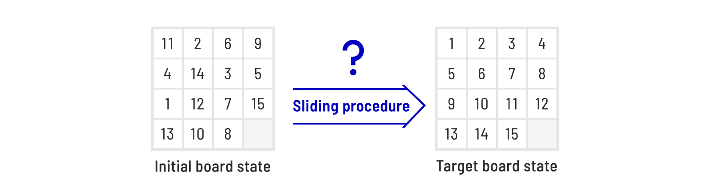
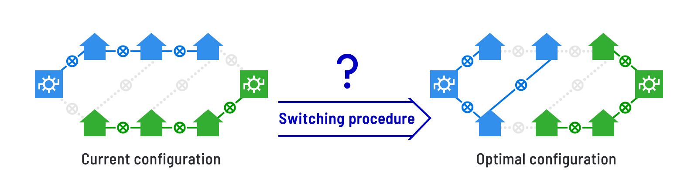
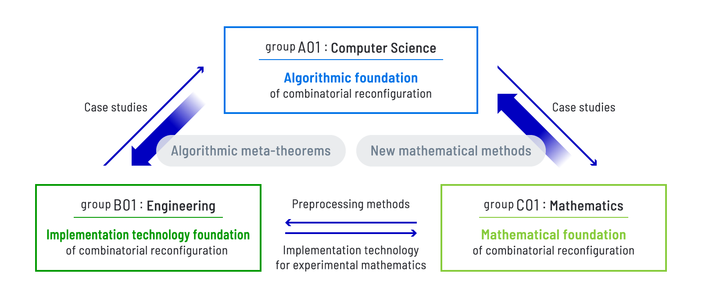

Mission of the Project
Combinatorial reconfiguration is a novel algorithmic concept that provides mathematical models and analysis for “transformations over state spaces.” Its appearance ranges from theory to applications. However, its technical achievements are hard to access. This project aims at founding a common infrastructure for utilizing and applying the algorithmic technology of combinatorial reconfiguration. The research groups consist of computer scientists, engineers, and mathematicians who cooperatively work for establishing the algorithmic foundation, the implementation technology foundation, and the mathematical foundation of combinatorial reconfiguration.
What is Combinatorial Reconfiguration?
A familiar example of combinatorial reconfiguration appears in puzzles. In the 15-puzzle, the tiles with numbers from 1 to 15 are given on a board, and a tile can be slid to an empty spot. The goal is to rearrange the tiles to their target positions. In the 15-puzzle, the number of possible board states is 16! (approximately ten trillion). This means that in the 15-puzzle we are asked to find a procedure of sliding tiles from the initial board state to the target board state over the state space consisting of approximately ten trillion board states. This is a typical example of “transformations over state spaces” which is the target of the algorithm theory called “combinatorial reconfiguration.”

Example of 15-puzzle
Combinatorial reconfiguration also appears in industry. In particular, applications to “24/7 systems” such as power distribution systems are prominent. A power distribution network is designed as it may reduce the blackout duration when failure happens by supplying electricity via multiple numbers of routes. For example, the Japan standard benchmark model of power distribution networks has approximately ten octodecillion alternatives for the choice of network configurations. Even the computation of a single optimal network configuration among them is out of reach. Furthermore, even if we may compute a single optimal network configuration, we encounter another issue that is characteristic of 24/7 systems. Namely, upon a switching procedure to reconfigure the current configuration to the optimal one, we may not allow any power failure during the process. This requires us to develop a switching procedure that does not cause power failure upon the process over the state space consisting of approximately ten octodecillion alternatives from the current network configuration to an optimal network configuration. With this idea, the concept of combinatorial reconfiguration is indeed applied to power distribution systems.

Example of power distribution systems
State of the Art of Combinatorial Reconfiguration
Combinatorial reconfiguration appears in various areas of research and practice, and experiences successes ranging over several fields. However, the technology of combinatorial reconfiguration is only available to the experts who study it, and researchers in other areas and practitioners need to access those experts. This looks like a good opportunity for interdisciplinary research, but chances may be limited.
On the other hand, the technology of machine learning is rapidly spreading over a lot of fields, theories and applications. This has been supported by not only the activity of researchers but by the common infrastructure of research and development with rich software such as Python libraries. Similarly, Mathematica for symbolic computation and SAT solvers and IP solvers for combinatorial problems provide the foundations for non-experts, who can easily access those technologies and solve problems in their domains. Regretfully, combinatorial reconfiguration lacks such a common infrastructure.
Goal of This Project
The final goal of this project is to provide the common infrastructure for utilizing and applying the algorithmic technology of combinatorial reconfiguration. Toward this goal, computer scientists, engineers, and mathematicians work cooperatively, aim at establishing the algorithmic foundation, the implementation technology foundation, and the mathematical foundation of combinatorial reconfiguration, and establish the fundamental theory that is useful for software development and integration.

ORGANIZATION
-
groupA01
Computer Science Approach for Expanding Combinatorial Reconfiguration
Toward Automatic Generation of Algorithms

-
groupB01
Engineering Approach for Expanding Combinatorial Reconfiguration
Toward a General-Purpose Solver Using Power Distribution Systems as a Steppingstone

-
groupC01
Mathematics Approach for Expanding Combinatorial Reconfiguration
Toward New Methods Based on Case Studies
MEMBERSAdministrative Group
-
Principal InvestigatorITO, Takehiro
Tohoku UniversityGraduate School of Information SciencesDepartment of System Information Sciences -
KAWAHARA, Jun
Kyoto UniversityGraduate School of InformaticsDepartment of Communications and Computers Engineering -
OKAMOTO, Yoshio
The University of Electro-CommunicationsGraduate School of Informatics and EngineeringDepartment of Computer and Network Engineering -
SUZUKI, Akira
Tohoku UniversityGraduate School of Information SciencesEducation Section for Practical IT